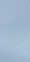

你好啊~~~你好啊~~~你好啊~~~你好啊~~~你好啊~~~你好啊~~~你好啊~~~你好啊~~~你好啊~~~你好啊~~~你好啊~~~你好啊~~~你好啊~~~你好啊
| Hello!Hi~Hello!Hi~Hello!Hi~Hello!Hi~Hello!Hi~Hello!Hi~Hello!Hi~Hello!Hi~Hello!Hi~Hello!Hi~Hello!Hi~Hello!Hi~ |
Hello!Hi~Hello!Hi~Hello!Hi~Hello!Hi~Hello!Hi~Hello!Hi~Hello!Hi~Hello!Hi~Hello!Hi~Hello!Hi~Hello!Hi~Hello!Hi~
明天考计算机网络~!!!!!! 考试~~~~~